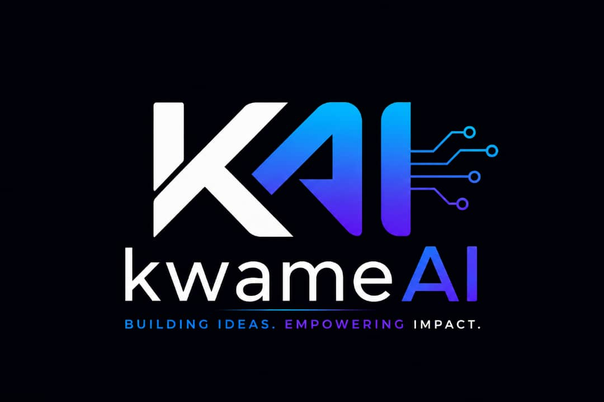
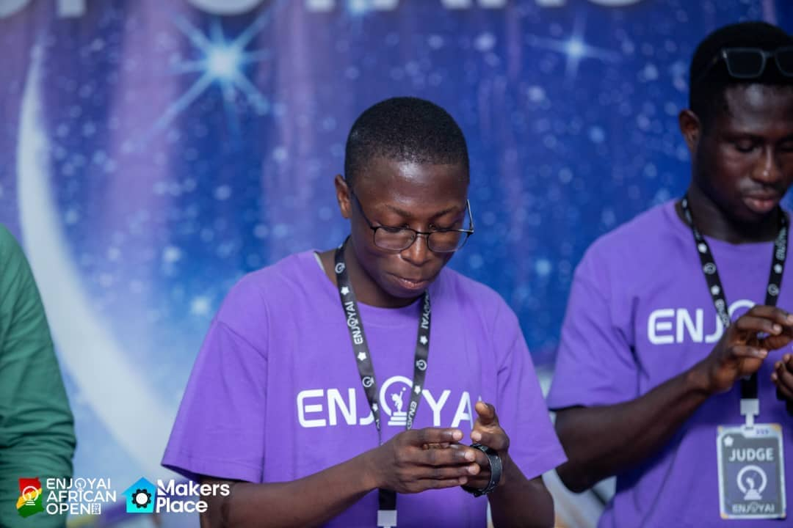
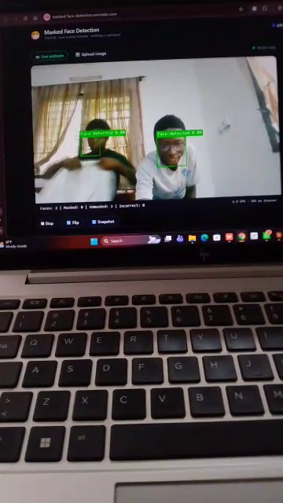
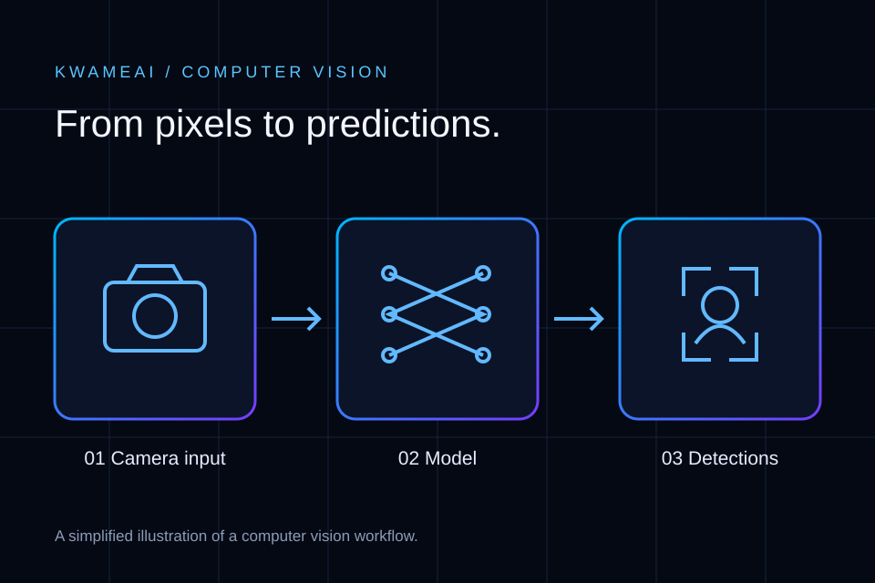

THE IMAGE COLLECTION
A visual story of
ideas and identity.
Four perspectives on kwameAI: the brand, the community, the project and the thinking behind it.

01 / THE IDENTITY
The kwameAI brand
Blue, violet and circuit-inspired detail express the link between ideas, software and intelligent systems.

02 / THE COMMUNITY
A moment in robotics
A photograph from the ENJOY AI African Open, bringing the people around technology into the story.

03 / THE PROJECT
Vision becomes a result
A frame from my computer vision demonstration. Green bounding boxes highlight faces in the camera feed.

04 / THE IDEA
From pixels to predictions
A simplified computer vision workflow: an image enters a model, which produces detections that can be displayed.